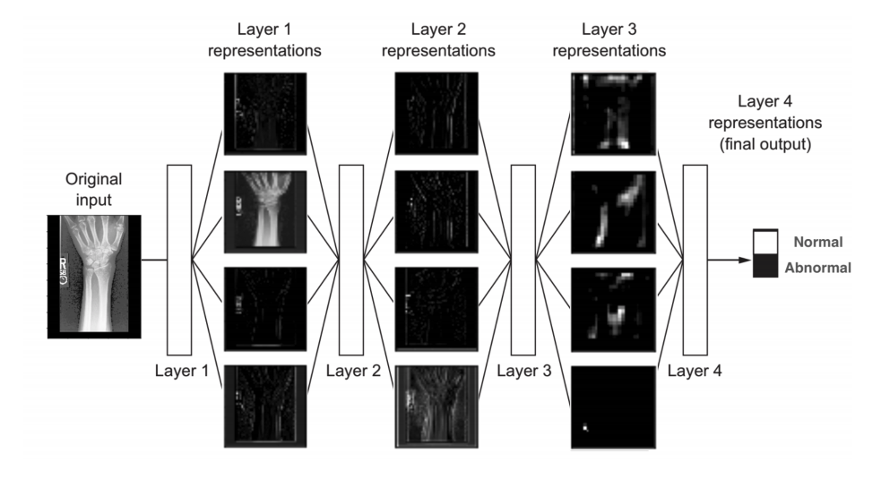

Rohan Sikand 
Convolutional Neural Networks for Universal Computer-Aided Detection of Musculoskeletal Abnormalities

Abstract
With over 2.6 billion musculoskeletal related injuries occurring each year, the need for trained doctors is extensive–especially in rural areas where doctors aren’t always available. This experiment aims to test the ability of machine learning algorithms, specifically convolutional neural networks, to accurately detect abnormalities in musculoskeletal radiographs. The Stanford MURA dataset, consisting of 14,863 musculoskeletal radiographs, was used as input data. This experiment aims not only to evaluate the use of machine learning to detect abormalities, but also to decipher which CNN architectures perform well for this task. Specifically, four different CNN architectures were tested: VGG-16, VGG-19, ResNet, and Xception. Predictions were made on a test set for each model on new radiographs. To show the results and to best compare the architectures, training and validation accuracy, training and validation loss, and a confusion matrix are shown for each architecture. From each confusion matrix, several metrics were calculated including sensitivity, specitivity, precision, classification accuracy, F-score, and Matthews correlation coefficient (MCC). The results are statistically significant and show that CNNs are applicable for detecting abnormalities in musculoskeletal radiographs.